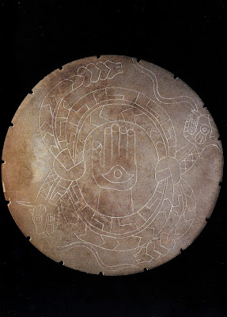
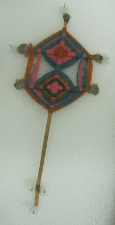
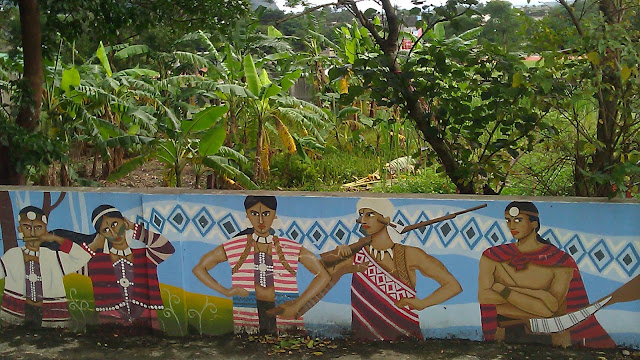
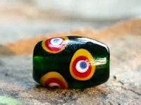
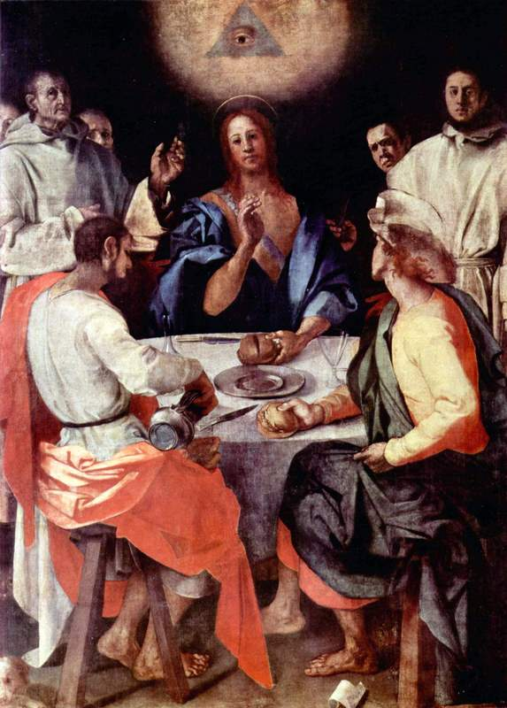

Regions
The Americas
The Moundville Peopleof central Alabama were a native peoples known for their funerary practices and their mysterious, rapid decline and extinction. "Researchers believe the hand and eye design found on the Rattlesnake Disk and other Moundville artifacts possibly represents the constellation we now know as Orion. Orion's “Belt” represents the wrist of the downturned hand, in the center of which is a small cluster of stars. This cluster is a portal, or gateway, through which the souls of the dead traveled to reach the path of souls which follows the Milky Way. As the hand rises over the western sky, traveling souls must leap across the chasm into the portal before the hand rises above the horizon." (Moundville Museum)
The Huichol Peopleof Mexico developed a different symbol for protection, but also included the Eye as the focal point. "Ojos de Dios (oh-ho-day-DEE-ohs), “god's eyes,” are ritual objects made by the Huichol (wet-chol) indigenous people of Mexico.The Huichol symbolism of the god's eyes is primarily associated with the prayers for their children - prayers for a good long life, protection and to insure abundant crops." (Museum of International Folk Art)
Polynesia
The Atayal People are an aboriginal tribe from Taiwan. "It is said that the checker is the symbol of the eye, representing the blessing of the ancestral spirit." (Council on Indigenous Peoples of Taiwan)
The Paiwan People are another aboriginal tribe from Taiwan with emphasis on bead-making. "According to the Paiwan legend, Paiwan ancestors made “glass beads” with the beautiful eyes of dragonflies, so glass beads are a gift from the gods." (Council on Indigenous Peoples of Taiwan)
The Middle East & North Africa

Both Jewish and Islamic cultures place heavy emphasis on the Hamsa, or Evil Eye. "The Hamsa/Hand of Fatima is a hand that holds many different meanings to a wide range of cultures, including Judaism and Islam. Hamsa, or “khamsa” (خمسة) in Arabic, means five: a number associated with the Evil Eye, the five pillars of Islam, and of course, the five fingers on the symbolic hand itself. Providing protection from the Evil Eye, this symbol is especially popular amongst both sides of my family, being Middle Eastern and Jewish." (Jewish Women's Archive)
Europe
In the Renaissance Era Christian artists would paint the symbol known as The Eye of Providence to represent God's presence. "In this painting by Pontormo, the Eye of Providence looks down upon the gathering of the disciples with Christ, when he reveals himself in the sharing of the cup and bread. This symbol, known today as part of U.S. currency design, has been used for centuries to indicate God's presence. In this painting by Pontormo, the symbol communicates God's watching over humankind. Much as the dove symbolizes God's presence in the incarnation, the Eye of Providence evokes the union of Christ with God after his resurrection." (Vanderbilt University)